Sketches
We first created sketches to explore different layouts for the screen and modules (components on the screen). Each person drew a minimum of eight different screens. Our project was slightly different from the other groups because the home was an aggregator, rather than a feature with a distinct flow. Therefore, following conversations with our professor, Vanessa, we agree that it was also important for the sketches to depict how the layouts would look based on the user state (new user versus active user), instead of focusing on having 8 sets of flows.
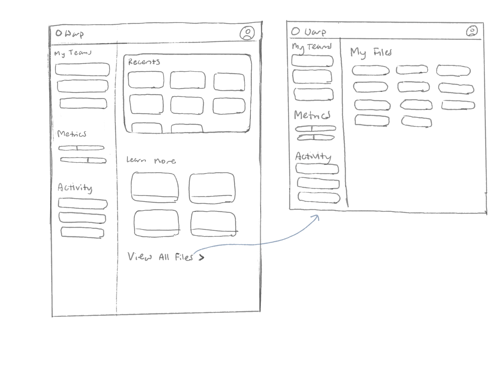
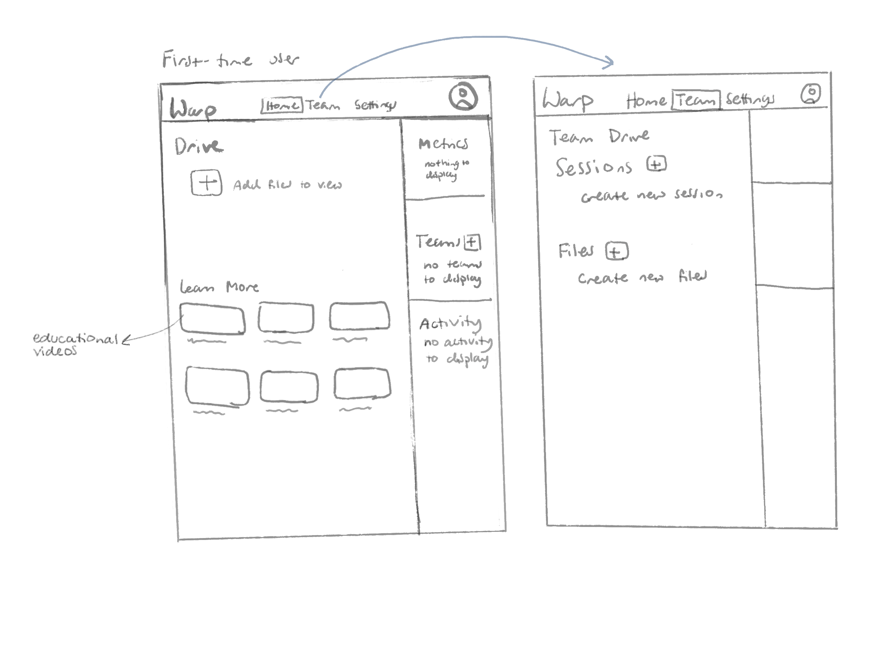
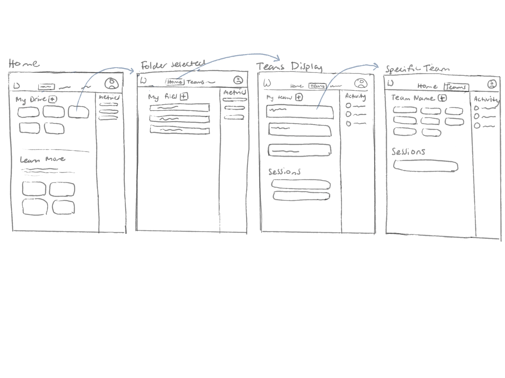
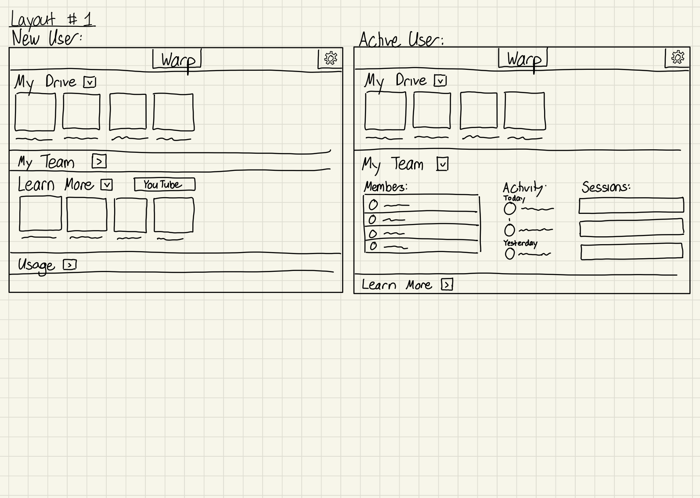

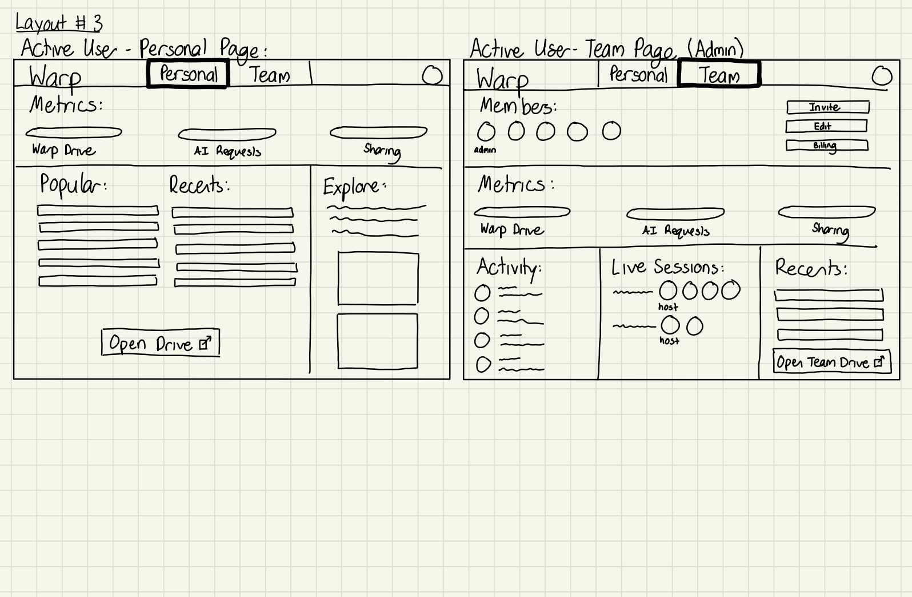
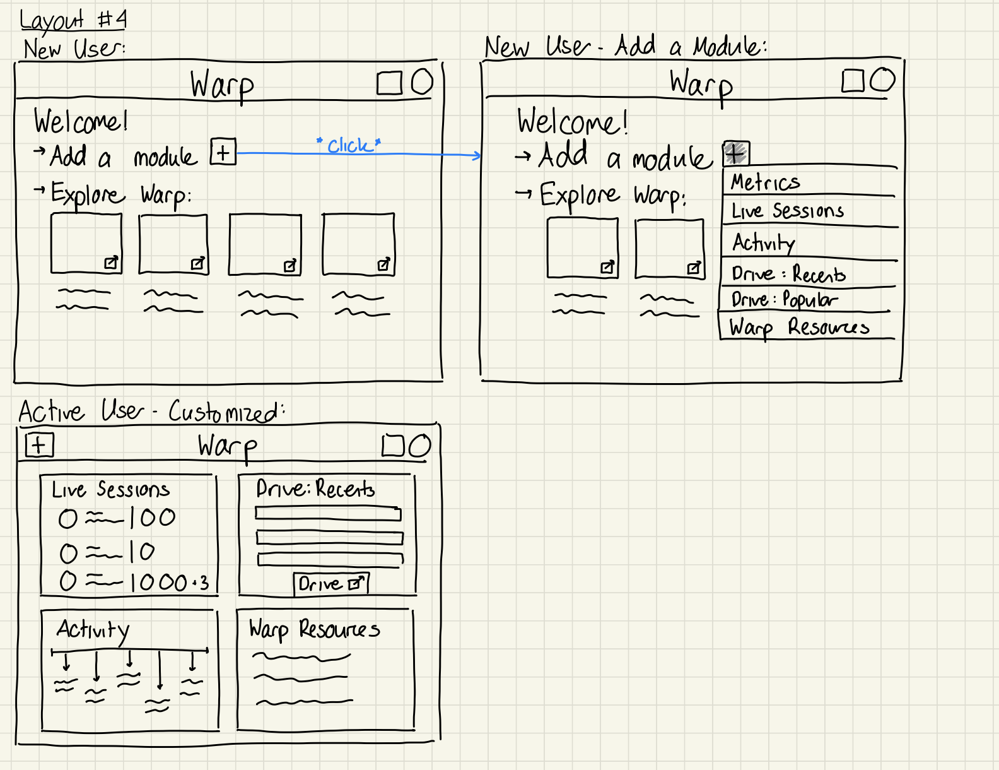
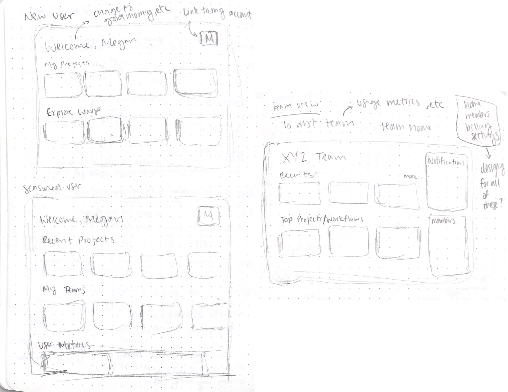
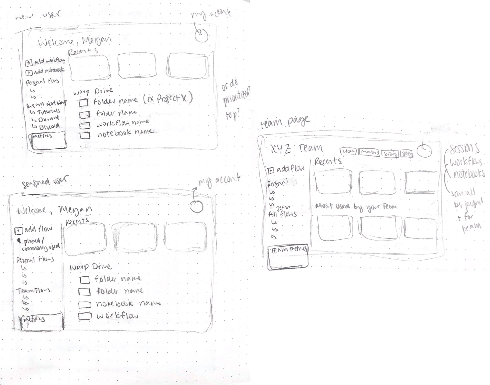

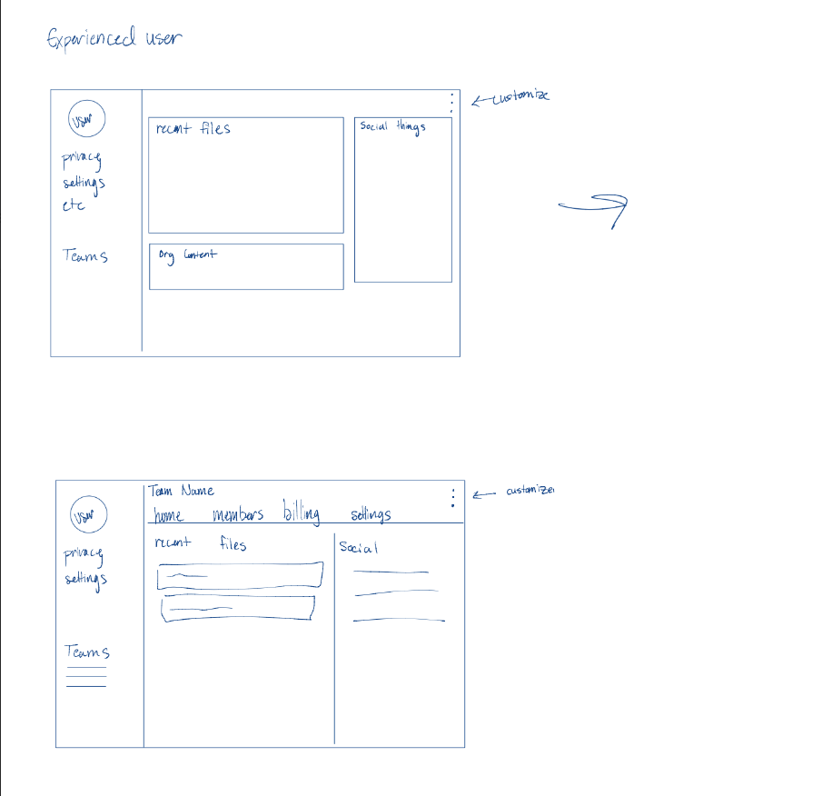
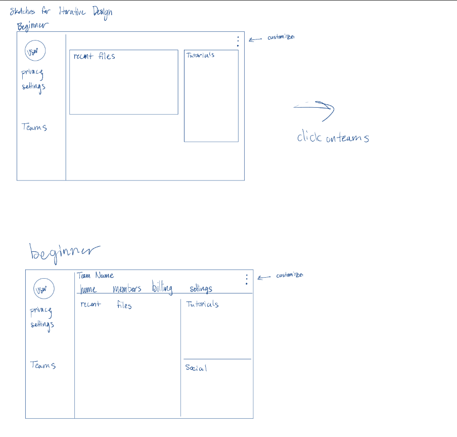
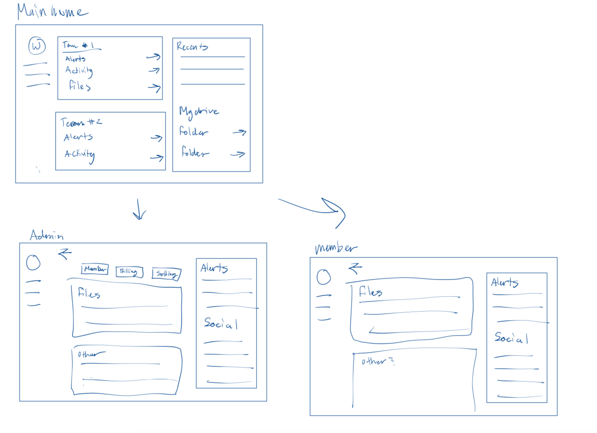